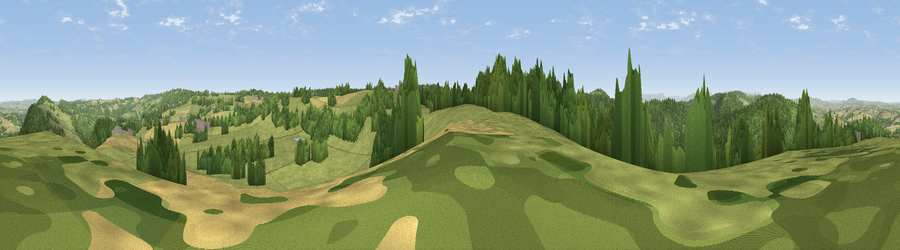

Viewpoint near English Bicknor
#14833 in England · top 33% of its area beats it · near English BicknorWhere it is
The exact computed spot (SO 56725 14925). Click the marker for map links.
The view, rendered

A 360° render of this exact spot computed from the terrain model, tree cover and land cover — summer colours, afternoon light, calibrated against photographs of famous viewpoints. Real trees, hedges and buildings will differ in detail.
The panorama
Grey silhouette: terrain skyline in each direction (720 bearings, Earth curvature and refraction included). Dashed green: skyline with trees (+15 m) and buildings (+8 m) as obstacles. Blue strip: how far the ground is visible on each bearing.
Where the view opens
Wedge length = distance to the farthest visible ground on that bearing (vegetation-aware). Rings at 10, 25 and 50 km.
What fills the view
44% grassland · 44% woodland · 11% cropland ·
Angular shares of the visible panorama (visual magnitude), not map area. Landscape diversity 0.44 (0–1 Shannon).
Key numbers
More beautiful places nearby
The staircase of upgrades: each row has a higher view potential than everything closer. Driving times are estimates from straight-line distance, calibrated against real road routing — check an actual route before setting out.
| Place | Direction | Drive | Score |
|---|---|---|---|
| Viewpoint near Christchurch | SSE · 1 km | ~3 min | 58.6 |
| Viewpoint near Upper Lydbrook | E · 3 km | ~7 min | 67.2 |
| Viewpoint near Goodrich | NNE · 4 km | ~8 min | 74.0 |
| Viewpoint near Ruardean | ENE · 6 km | ~13 min | 74.2 |
| Chase Wood Hill | NNE · 8 km | ~17 min | 77.6 |
| Viewpoint near Orcop Hill | NW · 16 km | ~29 min | 79.9 |
| Garway Hill | NW · 17 km | ~29 min | 84.6 |
| Millennium Hill | NE · 31 km | ~49 min | 86.9 |
51.83125, -2.62940 · source: screening · position refined by local search. Computed location — check access rights before visiting.